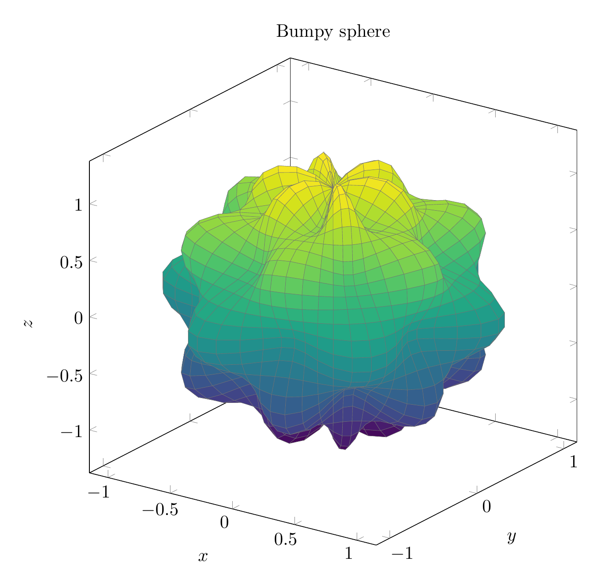

Please solve the problem in the following image.
(Image `20260928_150622_507162_utc_0800_0.png`. Alt text: Image: human_20260928_150622_507162_utc_0800)
20260928_150622_507162_utc_0800_0.png
End of problem
Answer
# Volume of the "bumpy sphere" tumor model
## 1. Setting up the region
The surface is $\rho = 1 + \frac{1}{5}\sin(m\theta)\sin(n\phi)$ with $m = 6,\; n = 5$:
$$
\rho = 1 + \tfrac15\sin 6\theta\,\sin 5\phi .
$$
Because the bump amplitude is $\tfrac15 < 1$, the radius $\rho$ is **positive for every direction**, so the surface is star-shaped about the origin and cleanly encloses one solid region $E$:
$$
E=\Big\{(\rho,\theta,\phi):\ 0\le \rho \le 1+\tfrac15\sin 6\theta\,\sin 5\phi,\ \ 0\le\theta\le 2\pi,\ 0\le\phi\le \pi\Big\}.
$$
In spherical coordinates the volume element is $dV = \rho^{2}\sin\phi\,d\rho\,d\theta\,d\phi$, so
$$
V=\iiint_E dV=\int_0^{\pi}\!\!\int_0^{2\pi}\!\!\int_0^{\,1+\frac15\sin 6\theta\sin 5\phi}\rho^{2}\sin\phi\;d\rho\,d\theta\,d\phi .
$$
---
\documentclass[border=10pt]{standalone}
\usepackage{pgfplots}
\usepgfplotslibrary{colormaps}
\pgfplotsset{compat=1.18, trig format plots=rad}
\begin{document}
\begin{tikzpicture}
\begin{axis}[
width=11cm, height=11cm,
view={35}{22},
colormap/viridis,
xlabel=$x$, ylabel=$y$, zlabel=$z$,
title={Bumpy sphere},
domain=0:2*pi, y domain=0:pi,
samples=60, samples y=30,
z buffer=sort]
\addplot3[
surf, shader=faceted,
faceted color=black!55,
line width=0.15pt]
({(1+0.2*sin(6*x)*sin(5*y))*sin(y)*cos(x)},
{(1+0.2*sin(6*x)*sin(5*y))*sin(y)*sin(x)},
{(1+0.2*sin(6*x)*sin(5*y))*cos(y)});
\end{axis}
\end{tikzpicture}
\end{document}

pgfplots_0.png
---
The picture shows the closed bumpy sphere we must measure.
## 2. The $\rho$-integral
Since $\displaystyle\int_0^{R}\rho^{2}\,d\rho=\frac{R^{3}}{3}$, the inner integral gives
$$
V=\frac13\int_0^{\pi}\!\!\int_0^{2\pi}\Big(1+\tfrac15\sin 6\theta\,\sin 5\phi\Big)^{3}\sin\phi\;d\theta\,d\phi .
$$
Write $u = 1 + c\sin 6\theta$ with $c = \tfrac15\sin 5\phi$ and expand using the binomial theorem:
$$
u^{3}=1+3c\sin 6\theta+3c^{2}\sin^{2}6\theta+c^{3}\sin^{3}6\theta .
$$
---
## 3. The $\theta$-integral by orthogonality
Over a full period $[0,2\pi]$,
$$
\int_0^{2\pi}\!\sin 6\theta\,d\theta=0,\qquad
\int_0^{2\pi}\!\sin^{2}6\theta\,d\theta=\pi,\qquad
\int_0^{2\pi}\!\sin^{3}6\theta\,d\theta=0 .
$$
Hence only the middle term survives:
$$
\int_0^{2\pi}\Big(1+c\sin 6\theta\Big)^{3}d\theta=2\pi+3\pi c^{2}
=2\pi+\frac{3\pi}{25}\sin^{2}5\phi .
$$
---
## 4. Reducing to a single integral in $\phi$
Substituting back,
$$
V=\frac13\int_0^{\pi}\Big(2\pi+\frac{3\pi}{25}\sin^{2}5\phi\Big)\sin\phi\;d\phi
=\frac{4\pi}{3}+\frac{\pi}{25}\underbrace{\int_0^{\pi}\sin^{2}5\phi\,\sin\phi\,d\phi}_{=:J} .
$$
To evaluate $J$ use $\sin^{2}5\phi=\dfrac{1-\cos 10\phi}{2}$ and the product-to-sum identity $\cos 10\phi\sin\phi=\tfrac12\big(\sin 11\phi-\sin 9\phi\big)$. Since $\displaystyle\int_0^{\pi}\sin k\phi\,d\phi=\frac{2}{k}$ for odd $k$,
$$
\int_0^{\pi}\cos 10\phi\,\sin\phi\,d\phi=\tfrac12\Big(\tfrac{2}{11}-\tfrac{2}{9}\Big)=\tfrac1{11}-\tfrac19=-\tfrac{2}{99},
$$
and therefore
$$
J=\tfrac12(2)-\tfrac12\Big(-\tfrac{2}{99}\Big)=1+\tfrac{1}{99}=\frac{100}{99} .
$$
---
pgfplots_1.png
---
The figure above is the slice cut by the plane through the poles ($\phi=\pi/2$). There $\sin 5\phi=\sin\tfrac{5\pi}{2}=1$, so the boundary reduces to the six-petaled "flower" $\rho = 1+\tfrac15\sin6\theta$, which oscillates between $0.8$ and $1.2$ — exactly the 6 bumps seen on the sphere. Averaging the area inside this curve with the $\sin\phi$ weight over all latitudes is precisely what the $\phi$-integral does.
## 5. Final volume
$$
V=\frac{4\pi}{3}+\frac{\pi}{25}\cdot\frac{100}{99}
=\frac{4\pi}{3}+\frac{4\pi}{99}
=\frac{132\pi+4\pi}{99}
=\boxed{\dfrac{136\pi}{99}}
$$
Numerically, $V\approx 4.3157$, just slightly larger than the unit sphere $\tfrac43\pi\approx 4.1888$ — as expected, since the bumps only add a little volume.
**General pattern.** For the surface $\rho = 1+\tfrac15\sin m\theta\,\sin n\phi$ the same argument gives the closed form
$$
V=\frac{4\pi}{3}+\frac{\pi}{25}\cdot\frac{4n^{2}}{4n^{2}-1},
\qquad \text{using }\ \int_0^{\pi}\sin^{2}n\phi\,\sin\phi\,d\phi=\frac{4n^{2}}{4n^{2}-1},
$$
which for $n=5$ yields $\dfrac{4\pi}{3}+\dfrac{4\pi}{99}=\dfrac{136\pi}{99}$.